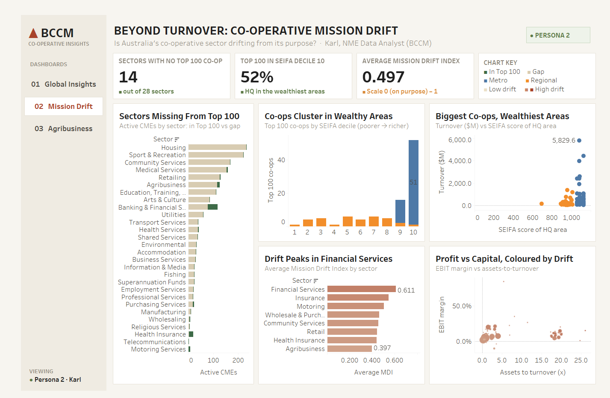
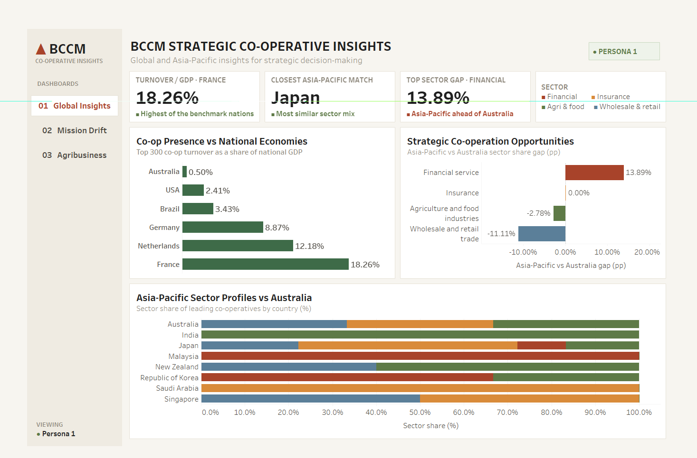

Case study 01
Australia's co-operative sector
Tableau dashboard · Python · ABS SEIFA
A dashboard for the national co-op report: which sectors the Top 100 leaves out, where the biggest co-ops are, and whether profit is pulling them from their purpose.
52%of the Top 100 are in the wealthiest decile of areas
Read the report (PDF) →